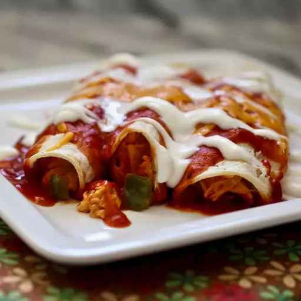

Chicken Enchiladas

This chicken enchilada recipe is easy to make with tortillas, tender chicken,
and a deliciously cheesy sauce for a family-pleasing Mexican meal.
Ingredients
- 1 Tbsp olive oil
- 4 skinless, boneless chicken breast halves
- 1 onion, chopped
- 1 3/4 cups shredded cheddar cheese, divided
- 1/2 pint sour cream
- 1 Tbsp dried parsley
- 1/2 tsp dried oregano
- 1/2 tsp ground black pepper
- 15oz tomato sauce
- 1/3 cup chopped green bell pepper
- 1 clove garlic, minced
- 1 Tbsp chili powder
- 1/2 tsp salt
- 1/2 cup water
- 8 flour tortillas
- 12oz taco sauce
Steps
- Preheat oven to 350 degrees F
- Heat oil in a nonstick skillet over medium heat. Add chicken and cook
until no longer pink and juices run clear, 5-6mins per side.
- Transfer chicken to a cutting board and cut into cubes. Return to skillet.
- Add onion, 1 cup cheddar, sour cream, parsley, oregano, and black pepper.
Cook and stir over low heat until cheese melts. Stir in tomato sauce,
green pepper, garlic, chili powder, and salt. Add water if needed.
- Spoon chicken mixture into tortillas and roll into enchiladas. Arrange
enchiladas, seam-side down, in a 9x13in baking dish. Top with taco sauce
and remaining 3/4 cup cheddar.
- Bake in preheated oven, uncovered, until cheese has melted, about 20
minutes. Let cool briefly before serving.